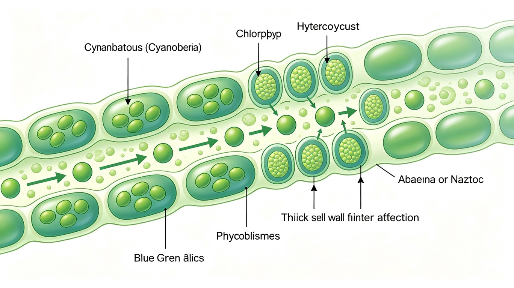

第三节 原核生物（二）—— 蓝藻、放线菌与古菌
一、蓝藻（Cyanobacteria）—— 产氧光合原核生物
蓝藻（蓝细菌，Cyanobacteria）是产氧光合原核生物，是地球上最早的光合放氧生物（约27亿年前），通过光合作用释放O₂，彻底改变了地球大气组成，为真核生物的起源和演化奠定了基础。蓝藻属于细菌域（Bacteria），是G⁻菌，但细胞壁结构类似G⁺（肽聚糖层较厚）。
光合色素系统：蓝藻的光合色素系统是原核生物中最复杂的。
- 叶绿素a（Chl a）：蓝藻唯一的光合反应中心色素，与高等植物和绿藻相同。值得注意的是，蓝藻不含叶绿素b（这是蓝藻与绿藻/高等植物的关键区别）。
- 藻胆体（phycobilisome）：蓝藻特有的捕光天线复合体，位于类囊体膜外表面，由藻胆蛋白（phycobiliprotein）组成。包括：藻蓝蛋白（phycocyanin，蓝色）、别藻蓝蛋白（allophycocyanin，浅蓝色）、藻红蛋白（phycoerythrin，红色）。藻胆蛋白通过共价键连接开链四吡咯色素（phycobilin），能量传递效率极高（>95%）：藻红蛋白→藻蓝蛋白→别藻蓝蛋白→Chl a反应中心。
- 类胡萝卜素：β-胡萝卜素、玉米黄质等，辅助光捕获和光保护。
- 光合膜系统：类囊体（thylakoid）在细胞质中游离分布，不形成叶绿体（原核生物特征）。蓝藻的光合作用包含两个光系统（PSI和PSII），与高等植物同，产生O₂。

（一）蓝藻的特殊细胞类型
蓝藻的细胞分化是原核生物中最复杂的，是联赛高频考点：
- 异形胞（heterocyst）：由营养细胞分化而来，专司固氮。特征：细胞壁增厚（含糖脂层，阻止O₂进入），无PSII（不放氧），保留PSI（产生ATP和还原力），降解藻胆体。异形胞与相邻营养细胞通过胞间连丝（microplasmodesmata）交换物质——营养细胞提供碳水化合物（蔗糖），异形胞提供固定态氮（谷氨酰胺）。固氮酶（nitrogenase）对O₂极敏感，异形胞通过无PSII+厚壁+高呼吸速率创造厌氧微环境保护固氮酶。代表：鱼腥藻（Anabaena）、念珠藻（Nostoc）。
- 厚壁孢子（akinete）：由营养细胞增大形成，富含贮藏物质（糖原、蓝藻淀粉cyanophycin），细胞壁加厚，抗逆性强（可耐受干旱、低温），是蓝藻的休眠体。在适宜条件下萌发成新的丝状体。代表：鱼腥藻、念珠藻。
- 藻殖段（hormogonium）：丝状蓝藻断裂形成的短链片段，可滑行运动，是营养繁殖方式。藻殖段离开母体后固着生长，形成新的丝状体。
- 静息孢子（baeocyte）：某些单细胞蓝藻通过多次快速分裂产生的小细胞（如皮果藻Dermocarpa），是繁殖方式。
（二）蓝藻代表属
- 鱼腥藻（Anabaena）：丝状，有异形胞和厚壁孢子，水华蓝藻代表。与满江红（Azolla，水生蕨类）共生固氮——满江红叶腔中居住鱼腥藻，每公顷稻田可固氮40-60 kg/年，是传统稻田的天然氮肥来源。
- 念珠藻（Nostoc）：丝状，有异形胞，群体被胶质鞘包裹呈念珠状。地木耳（Nostoc commune）可食用，发菜（Nostoc flagelliforme）是荒漠蓝藻。
- 螺旋藻（Spirulina/Arthrospira）：螺旋状丝状体，富含蛋白质（60-70%干重），商业化培养作为保健品和食品补充剂。注意：螺旋藻属于蓝藻，不是真核藻类。
- 微囊藻（Microcystis）：单细胞或群体，水华蓝藻，产生微囊藻毒素（microcystin，肝毒素，抑制蛋白磷酸酶PP1/PP2A）。微囊藻水华是饮用水安全的重要威胁。
- 原绿藻（Prochloron）：含叶绿素a和叶绿素b（与绿藻/高等植物同），无藻胆体，被认为是叶绿体祖先的"活化石"。原绿藻的发现为叶绿体起源于蓝藻提供了关键证据。
- 聚球藻（Synechococcus）：海洋单细胞蓝藻，是海洋初级生产力的重要贡献者（贡献约25%海洋固碳量）。
二、放线菌（Actinobacteria）
放线菌（Actinobacteria）是G⁺菌，具分枝状菌丝体，形态介于细菌和真菌之间（但属于原核生物）。放线菌是抗生素最重要的生产者——约70%的临床抗生素来源于放线菌（尤其是链霉菌属）。
- 链霉菌属（Streptomyces）：最重要的抗生素产生菌。产生链霉素、四环素、红霉素、氯霉素、万古霉素、头孢霉素、两性霉素B、阿维菌素（avermectin，抗寄生虫，2015年诺贝尔奖）等。链霉菌具有复杂的次级代谢——基因组内含有大量次级代谢基因簇（约20-30个），在营养匮乏时启动抗生素合成。链霉菌的形态分化：基质菌丝（substrate mycelium）→气生菌丝（aerial mycelium）→孢子丝（spore chain）→分生孢子（conidia）。孢子通过顶端断裂方式形成。
- 弗兰克氏菌属（Frankia）：与非豆科木本植物（如桤木Alnus、杨梅Myrica、沙棘Hippophae）共生固氮，形成根瘤。与根瘤菌-豆科植物共生固氮不同，弗兰克氏菌属于放线菌门。
- 分枝杆菌属（Mycobacterium）：细胞壁含大量分枝菌酸（mycolic acid），抗酸染色阳性。包括结核分枝杆菌（M. tuberculosis，结核病）、麻风分枝杆菌（M. leprae，麻风病）。
- 棒状杆菌属（Corynebacterium）：白喉棒状杆菌（C. diphtheriae，白喉毒素由β噬菌体编码）。
三、古菌（Archaea）—— 三域学说的关键
古菌（Archaea）是Carl Woese于1977年通过16S rRNA序列分析发现的第三域生物。古菌在形态上类似细菌（原核细胞结构），但在分子水平上与真核生物更接近。古菌常生活在极端环境（嗜热、嗜盐、嗜酸、产甲烷），但也广泛存在于普通环境（土壤、海洋、人体肠道）。
古菌与细菌、真核生物的分子差异是联赛核心考点：

| 特征 | 细菌（Bacteria） | 古菌（Archaea） | 真核生物（Eukarya） |
|---|---|---|---|
| 细胞核 | 无（拟核） | 无（拟核） | 有（核膜包被） |
| 细胞器 | 无膜包被细胞器 | 无膜包被细胞器 | 有（线粒体、叶绿体等） |
| 细胞壁成分 | 肽聚糖（含NAG-NAM） | 无肽聚糖（假肽聚糖、蛋白质亚基、多糖） | 无肽聚糖（植物为纤维素，真菌为几丁质） |
| 膜脂 | 酯键连接脂肪酸+甘油-3-磷酸 | 醚键连接类异戊二烯+甘油-1-磷酸 | 酯键连接脂肪酸+甘油-3-磷酸 |
| 膜脂结构 | 直链脂肪酸，双层 | 支链类异戊二烯，可形成单层膜 | 直链脂肪酸，双层 |
| RNA聚合酶 | 1种（约5亚基） | 1种（8-12亚基，类似真核Pol II） | 3种（Pol I/II/III，各多亚基） |
| 起始tRNA | 甲酰甲硫氨酸-tRNA（fMet-tRNA） | 甲硫氨酸-tRNA（Met-tRNA） | 甲硫氨酸-tRNA（Met-tRNA） |
| 组蛋白 | 无 | 有（古菌组蛋白，与真核组蛋白同源） | 有（H2A/H2B/H3/H4） |
| 内含子 | 罕见 | tRNA基因有内含子 | 普遍存在 |
| 对链霉素敏感性 | 敏感 | 不敏感 | 不敏感 |
| 对氯霉素敏感性 | 敏感 | 不敏感 | 不敏感 |
| 对白喉毒素敏感性 | 不敏感 | 敏感（ADP-核糖基化延伸因子EF-2） | 敏感 |
| 核糖体 | 70S | 70S（但rRNA和蛋白组成不同） | 80S（细胞质） |
古菌膜脂的特殊性：古菌膜脂是醚键（而非酯键）连接的甘油二醚（diether）或甘油四醚（tetraether），碳氢链为类异戊二烯（而非脂肪酸）。甘油骨架为sn-甘油-1-磷酸（细菌和真核为sn-甘油-3-磷酸），两者呈镜像异构关系。甘油四醚可形成单层膜（而非脂双层），这种结构赋予古菌极端环境耐受性——嗜热古菌的膜在沸水中仍保持稳定。
古菌的组蛋白：古菌具有与真核生物H3/H4组蛋白同源的组蛋白，可形成四聚体，DNA缠绕其上形成类似核小体的结构。这是古菌与真核生物亲缘关系最近的分子证据之一。
古菌的RNA聚合酶：古菌RNA聚合酶含8-12个亚基，在亚基组成和序列上与真核生物RNA聚合酶II高度同源，对利福平不敏感（细菌RNA聚合酶对利福平敏感）。
四、古菌的主要类群
（一）产甲烷菌（Methanogens）
产甲烷菌是严格厌氧的古菌，通过还原CO₂、甲酸、乙酸、甲醇等产生甲烷（CH₄）。属于广古菌门（Euryarchaeota）。产甲烷菌是唯一产生甲烷的生物，每年产生约10亿吨甲烷，是大气甲烷的主要来源（约70%来自产甲烷菌活动）。
- 特有辅酶：
- 辅酶M（Coenzyme M, CoM）：HS-CH₂CH₂-SO₃⁻（2-巯基乙磺酸），是所有已知辅酶中最小和最简单的。在产甲烷最后一步，甲基-CoM被甲基辅酶M还原酶（MCR）还原为CH₄。
- 辅酶F420：脱氮杂黄素衍生物，在紫外光下发出蓝绿色荧光（可用于产甲烷菌的荧光显微镜检测）。作为电子载体参与产甲烷途径。
- 辅酶F430：含镍四吡咯（镍卟啉），是甲基辅酶M还原酶（MCR）的辅基。MCR催化产甲烷的最后一步，是产甲烷菌特有的酶。
- 甲烷呋喃（methanofuran）：参与CO₂还原的第一步。
- 四氢甲烷蝶呤（H₄MPT）：类似四氢叶酸的C1载体。
- 生态位：严格厌氧环境——湿地/稻田、反刍动物瘤胃、白蚁肠道、海底沉积物、厌氧消化器。人体肠道中也有产甲烷菌（主要是Methanobrevibacter smithii）。
- 代表：甲烷杆菌属（Methanobacterium）、甲烷八叠球菌属（Methanosarcina）、甲烷球菌属（Methanococcus）。
（二）极端嗜盐菌（Extreme Halophiles）
极端嗜盐菌生活在饱和盐浓度（3-5 M NaCl）环境中，如盐湖、盐田、腌制品。属于广古菌门（Euryarchaeota）。代表：盐杆菌属（Halobacterium）、盐球菌属（Halococcus）。
- 紫膜（purple membrane）：细胞膜上的二维晶格状结构，由细菌视紫红质（bacteriorhodopsin, BR）组成。BR是光驱动质子泵——吸收光能后，视黄醛（retinal）从全反式变为13-顺式构象，将质子从细胞内泵出到细胞外，建立质子梯度，驱动ATP合酶合成ATP。这是一种不依赖叶绿素的光合作用（archaeal photosynthesis）。
- 嗜盐机制：细胞内积累高浓度K⁺（可达4-5M）而非Na⁺维持渗透平衡，所有蛋白质和酶适应高盐环境（表面富含酸性氨基酸Asp/Glu而非碱性氨基酸）。
- 其他视紫红质：盐视紫红质（halorhodopsin, HR）是光驱动Cl⁻泵；感觉视紫红质（sensory rhodopsin, SR）介导趋光性。
（三）极端嗜热菌（Hyperthermophiles）
极端嗜热菌生长在80°C以上高温环境，最适生长温度>80°C。多属于泉古菌门（Crenarchaeota）。代表：硫化叶菌（Sulfolobus，嗜酸嗜热，pH 2-3, 70-80°C）、热球菌（Pyrococcus，100°C）、热网菌（Pyrodictium，105°C）、甲烷火菌（Methanopyrus，最适98°C，最高122°C——目前已知最高生长温度）。
- 分子适应机制：①膜脂为甘油四醚单层膜（抗高温）；②蛋白质含更多离子键、疏水核心更紧密、表面环（loop）更短；③DNA结合蛋白（如Sac7d）增加DNA Tm值；④反向DNA旋转酶（reverse gyrase）引入正超螺旋稳定DNA；⑤高GC含量。
- Taq DNA聚合酶：来源于水生栖热菌（Thermus aquaticus，虽属于细菌域但嗜热）。Taq pol是PCR技术的关键酶，最适温度75-80°C，95°C半衰期约40 min。Pfu DNA聚合酶（来源于Pyrococcus furiosus，古菌）具有3'→5'校对活性，保真度比Taq高约10倍。
- 应用：嗜热酶（thermozymes）在工业中的应用——高温下反应速率快、污染物少、底物溶解度大。如淀粉加工中的α-淀粉酶（>100°C仍稳定）、洗涤剂中的蛋白酶。
第三节 蓝藻、放线菌与古菌 — 必背考点总结
- 蓝藻：产氧光合原核生物，含Chl a（无Chl b），藻胆体（藻蓝蛋白+藻红蛋白+别藻蓝蛋白）是特有捕光天线。异形胞（固氮/无PSII/厚壁）、厚壁孢子（休眠）、藻殖段（繁殖）。代表：鱼腥藻（满江红共生）、念珠藻、螺旋藻、微囊藻。叶绿体起源于蓝藻的内共生。
- 放线菌：G⁺菌，链霉菌产70%临床抗生素（链霉素、四环素、红霉素等）。弗兰克氏菌与非豆科植物共生固氮。分枝杆菌属（抗酸染色，结核/麻风）。
- 古菌三域对比：12项分子差异——细胞壁（无肽聚糖）、膜脂（醚键+类异戊二烯+sn-甘油-1-磷酸）、RNA聚合酶（类似真核Pol II）、起始tRNA（Met-tRNA非fMet）、有组蛋白（与H3/H4同源）、对链霉素/氯霉素不敏感、对白喉毒素敏感。
- 产甲烷菌：严格厌氧，特有辅酶CoM、F420（荧光）、F430（含镍）。三种产甲烷途径。全球甲烷主要来源。
- 极端嗜盐菌：紫膜（细菌视紫红质BR，光驱动质子泵），细胞内积累K⁺。不依赖叶绿素的光合作用。
- 极端嗜热菌：甘油四醚单层膜，反向DNA旋转酶，Taq/Pfu DNA聚合酶。最高生长温度122°C。
高中教材衔接 · 课标对应
人教版高中生物对蓝藻（蓝细菌）和古菌的覆盖：
- 必修1《分子与细胞》第1章：原核生物的代表类群——除细菌外，蓝藻（蓝细菌 cyanobacteria，如念珠藻、鱼腥藻、颤藻、发菜）也是重要的原核生物代表；它是地球上出现最早、规模最大的产氧光合生物之一。念珠藻（地衣中的蓝藻共生体）作为"发菜"是高中常见的"蓝藻代表"。
- 必修1第5章"细胞的能量供应"：光合作用的进化——蓝藻是产氧光合的"先驱"，其产氧光合的出现（约 25 亿年前）导致大氧化事件（Great Oxidation Event），彻底改变了地球大气；蓝藻没有叶绿体，但有光合片层（thylakoid-like membrane）承载叶绿素 a 和藻蓝蛋白（phycocyanin）。
- 选择性必修2《生物与环境》第3章"生态系统"：生物固氮（nitrogen fixation）——蓝藻（如鱼腥藻 Anabaena）的异形胞（heterocyst）是固氮的特化细胞，含固氮酶（nitrogenase），将大气 N2 还原为 NH3，是水生生态系统中重要的氮源。
- 选择性必修3《生物技术与工程》第3章：三域学说（Three-domain system）由 Carl Woese 1977 年基于 16S rRNA 序列提出——细菌域（Bacteria）、古菌域（Archaea）、真核生物域（Eukarya）。古菌与细菌在细胞结构上相似（原核、无核膜），但分子水平差异巨大（膜脂、RNA 聚合酶、核糖体等）。
- 选修/课后扩展：极端环境微生物——嗜热古菌（如激烈热球菌 Pyrococcus furiosus，最适生长温度 100°C）、嗜盐古菌（盐生盐杆菌 Halobacterium，含菌紫红质 bacteriorhodopsin 介导光驱质子泵）、产甲烷古菌（甲烷短杆菌 Methanobrevibacter，产甲烷是沼气发酵的核心）。
课标 vs 竞赛的差距：
- 课标只要求"知道原核生物包括细菌和蓝藻"，竞赛要求：①蓝藻光合系统——含叶绿素 a（无叶绿素 b/c）、藻蓝蛋白（phycocyanin）、藻红蛋白（phycoerythrin）、别藻蓝蛋白（allophycocyanin）形成"藻胆体（phycobilisome）"作为捕光天线；②蓝藻异形胞（heterocyst）的结构和功能——细胞壁加厚（糖脂层隔绝 O2 保护固氮酶）、与营养细胞分化（丧失光系统 II，避免产 O2 抑制固氮酶）、通过微孔与营养细胞交换代谢物；③古菌细胞壁不含肽聚糖（假肽聚糖 pseudopeptidoglycan 或 S-layer 蛋白层）；④古菌膜脂为甘油醚键 + 异戊二烯侧链（vs 细菌/真核的甘油酯键 + 脂肪酸）；⑤古菌 RNA 聚合酶复杂（10-14 个亚基，类似真核）、核糖体蛋白更多（rRNA 折叠方式更接近真核）；⑥古菌 DNA 结合蛋白（HU 类似 Alba 蛋白，无真核组蛋白）、启动子结构（与真核 TATA 框相似，但转录机制不同）。
- 课标不涉及的：①蓝藻"藻胆体（phycobilisome）"的精细结构与能量传递；②固氮酶对 O2 极端敏感的机制（FeMo-cofactor 活性中心）；③古菌的鞭毛（archaella）由菌毛蛋白（archaellin）组成，旋转方式与细菌鞭毛不同（由 ATP 直接供能，非质子动力势）；④产甲烷古菌的辅酶（MFR, F420, F430, CoM-S-S-CoB）；⑤极端酶（extremozymes）—— Taq 聚合酶（来自水生栖热菌 Thermus aquaticus，95°C 仍稳定，PCR 核心技术）、Pfu 聚合酶（高保真，来自激烈火球菌 Pyrococcus furiosus）。
2025 / 2026 联赛 · 初赛真题链接
本章重难点深度解析
重难点 1：蓝藻的产氧光合与藻胆体（phycobilisome）
蓝藻是地球上出现最早的产氧光合生物（约 27-35 亿年前），其光合系统的结构与高等植物叶绿体不同，无叶绿体，无类囊体堆叠（grana），但有光合片层（thylakoid-like membrane）：
- 捕光天线——藻胆体（phycobilisome）：蓝藻无叶绿素 b/c，捕光主要由藻胆蛋白（phycobiliprotein）家族承担，形成大型捕光复合体——藻胆体。藻胆体是直径约 32-70 nm 的"半球形"结构，附着在类囊体膜外侧，由杆（rod）和核（core）组成：
①藻红蛋白（phycoerythrin, PE）——吸收 495-570 nm 绿光；
②藻蓝蛋白（phycocyanin, PC）——吸收 610-625 nm 橙光；
③别藻蓝蛋白（allophycocyanin, AP）——吸收 650-655 nm 红光。
能量传递链：PE → PC → AP → 叶绿素 a（PSII）。蓝藻可通过调整 PE/PC 比例适应光谱（"色素适应" chromatic adaptation）。 - 反应中心——PSII 和 PSI：与高等植物类似，PSII（P680）水解放氧、PSI（P700）NADP+还原；电子传递链（Z 方案）也类似。但蓝藻 PSII 的放氧复合体（OEC）含 4 Mn-1 Ca 簇，与高等植物相同。
- 储碳——糖原（glycogen）：蓝藻固定 CO2 的产物不以淀粉形式储存，而以糖原（α-1,4/α-1,6 葡聚糖）储存。Calvin 循环 3 阶段与高等植物相同。
- CO2 浓缩机制（CCM）：蓝藻有高效的 CCM——含 carboxysome（羧酶体）——多面体蛋白微室，含 RuBisCO 和碳酸酐酶。碳酸氢盐主动转运进入细胞 → 羧酶体内转化为 CO2 → 浓缩到 RuBisCO 周围（提高 1000 倍）。这也是蓝藻在低 CO2 环境中高效光合的机制。
重难点 2：固氮酶与异形胞（heterocyst）的演化适应
固氮酶（nitrogenase）由两个组分组成：MoFe 蛋白（dinitrogenase, NifDK）（含 FeMo-cofactor 活性中心，α2β2 异四聚体）和 Fe 蛋白（dinitrogenase reductase, NifH）（同型二聚体）。反应：N2 + 8 H+ + 8 e- + 16 ATP → 2 NH3 + H2 + 16 ADP + 16 Pi。
- 固氮酶的 O2 敏感性：固氮酶对 O2 极端敏感（O2 不可逆地破坏 FeMo-cofactor）——这是为什么多数固氮菌是厌氧或微需氧的。
- 异形胞的"避氧"策略：
①细胞壁加厚——三层包被（外层多糖 + 中层糖脂 hydroxylated long-chain glycolipid + 内层重组的肽聚糖层），降低 O2 渗入；
②光系统 II 活性几乎丧失——无 O2 产生；
③呼吸作用增强——消耗渗入的 O2；
④氮源输出——通过微孔（microplasmodesma）输出谷氨酰胺给营养细胞；
⑤碳源输入——从营养细胞获得蔗糖（蓝藻主要转运的固定碳）。 - 异形胞的分化：每 10-15 个营养细胞形成一个异形胞（间距规则），由 HetR（主调控因子，丝氨酸蛋白酶激活）和 PatS（抑制信号肽，扩散到相邻细胞阻止分化）协调。氮缺乏时 HetR 上调，PatS 下调 → 异形胞形成。
重难点 3：古菌与细菌/真核的本质差异
古菌域（Archaea）由 Carl Woese 1977 年基于 16S rRNA 序列分析提出，是与细菌（Bacteria）和真核（Eukarya）并列的第三大生命域。古菌虽然形态与细菌相似（原核，无核膜），但分子水平差异巨大：
- 细胞膜脂：古菌膜脂为甘油醚键（sn-2,3-醚键），而非细菌/真核的甘油酯键（sn-1,2-酯键）。古菌的疏水侧链是异戊二烯（isoprenoid）链（C20 植烷基 phytanyl, C40 双植烷基双植烷基），而非细菌/真核的脂肪酸。古菌的脂双层可形成单层膜（monolayer）——两个醚脂尾通过共价连接形成"双极脂（bolaamphiphile）"——这种结构在高温（如激烈热球菌 100°C）、强酸（pH 0-2 的 Picrophilus）、高盐（5 M NaCl 的 Halobacterium）中稳定性极高。
- 细胞壁：古菌不含肽聚糖（这是细菌的标志）。古菌的细胞壁类型：①假肽聚糖（pseudopeptidoglycan）——含 N-乙酰氨基塔罗糖醛酸（N-acetyltalosaminuronic acid, NAT）替代胞壁酸（muramic acid），仅产甲烷菌（Methanobacteriales）有；②S-layer（surface layer）——由蛋白质或糖蛋白亚基规则排列形成的二维晶格（如 Sulfolobus, Halobacterium）；③多糖（如 Methanosarcina 的酸性杂多糖）。
- DNA 与转录：古菌 DNA 折叠蛋白是 HU 类似物（如 Alba 蛋白、二聚体 Sm-like 蛋白）或真核组蛋白类似物（仅古菌中部分存在，如 Methanosarcina 的 HTa）。古菌 RNA 聚合酶亚基组成（10-14 个亚基）类似真核 Pol II（Rpb1-Rpb12），有 TATA 结合蛋白（TBP）、TFIIB 类似物（TFB）。古菌启动子有 TATA 框（真核特征）和 BRE 元件。转录机制虽类似真核（与细菌明显不同），但翻译系统更接近细菌（70S 核糖体，多顺反子 mRNA）。
- 代谢多样性：古菌的代谢类型独特：
①产甲烷菌（methanogens）——严格厌氧，用 H2 + CO2、乙酸、甲酸、甲醇、甲基胺等产甲烷。产甲烷涉及多种独特辅酶：MFR（methanofuran，结合 CO2）、F420（脱氮黄素，黄绿色荧光，电子载体）、F430（镍卟啉，甲基-CoM 还原酶 MCR 辅因子）、CoM-S-S-CoB（异质二硫醚，甲基转移最终步骤）。
②嗜盐古菌（halophiles）——需高盐（2-5 M NaCl），用"紫膜（purple membrane）"——菌紫红质（bacteriorhodopsin，27 kDa, 7 次跨膜）吸收光（570 nm 绿光）→ 视黄醛（all-trans → 13-cis）→ 质子泵出 → 形成质子动力势 → ATP 合酶合成 ATP。是最简单的光合磷酸化系统。
③嗜热古菌（thermophiles）——最适生长温度 60-100°C 乃至 113°C（Pyrolobus fumarii 113°C 仍能生长）。其酶（极端酶 extremozymes）耐高温——Taq 聚合酶（来自水生栖热菌 Thermus aquaticus，95°C 半衰期 40 min，95°C 仍能延伸）是 PCR 技术的核心；Pfu 聚合酶（来自激烈火球菌）有 3'-5' 校对活性，保真度更高。
④嗜酸古菌（acidophiles）——生长最适 pH 1-3（如 Picrophilus oshimae, pH 0.7 仍能生长），细胞质 pH 中性（~7），通过主动质子泵维持 pH 梯度。
重难点 4：极端古菌的环境生物技术与生命起源
- 极端酶（extremozymes）：嗜热酶的高温稳定性来自多种结构适应：①更多的盐桥和疏水核心；②表面带负电荷残基多（增加溶剂化）；③脯氨酸和精氨酸含量高（增强刚性）；④较短的 loop 区域；⑤常形成同型多聚体（四聚体、八聚体）。极端酶在工业生物技术、PCR、DNA 测序、分子诊断中应用广泛。
- 产甲烷与全球变化：产甲烷古菌是温室气体 CH4 的主要生物源——反刍动物（牛、羊）瘤胃、稻田、湿地、垃圾填埋场、白蚁肠道等产甲烷量占全球总 CH4 排放的 70%+。CH4 的温室效应是 CO2 的 25 倍（百年尺度）。当前研究热点：通过调控产甲烷古菌的辅酶或添加 3-NOP（3-硝基氧丙醇，抑制甲基-CoM 还原酶）减少牛羊甲烷排放。
- 古菌与生命起源：古菌的多种特征（脂质、RNA 聚合酶、转录机制）显示古菌与真核更接近（"真核 - 古菌 共同祖先" Eocyte 假说）。LUCA（Last Universal Common Ancestor）可能是嗜热的厌氧菌（或古菌），生活在深海热液喷口。Asgard 古菌（2017 年发现的 Lokiarchaeota, Thorarchaeota, Heimdallarchaeota 等）含真核特征蛋白（actin 同源物、ESCRT 复合体、ubiquitin 系统），是真核的"祖先候选"——暗示真核细胞是从古菌"内共生"过程产生的。
- 极端环境生态学：极端古菌是研究"生命极限"和"地外生命可能性"的模型——火星表面、土卫六（Titan）液态甲烷海洋、木卫二（Europa）冰下海洋都可能存在类似古菌的极端微生物。